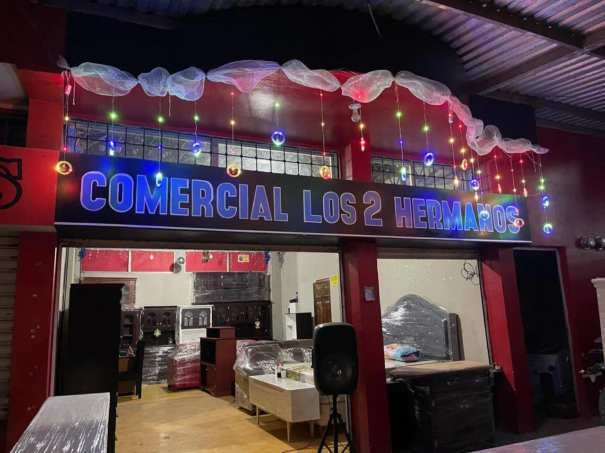
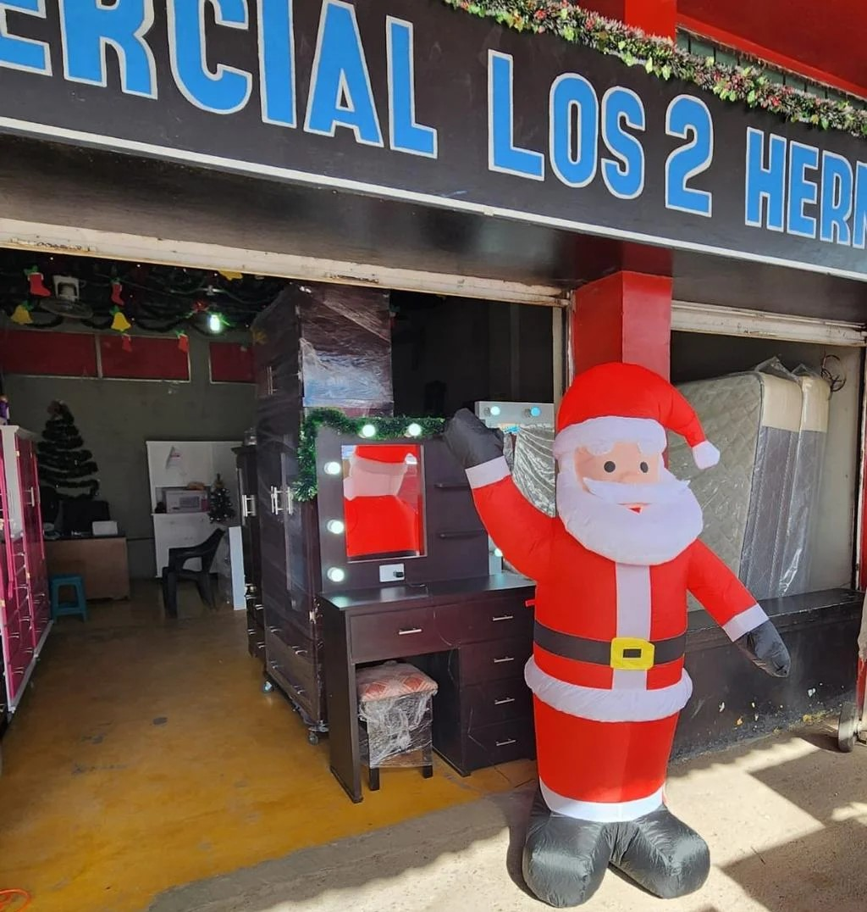

Fe
Confianza plena en Dios como pilar fundamental de nuestra empresa.

Todo sobre el manejo de muebles y expertos en hacer tus ideas realidad
La Comercial nace en la ciudad de Tegucigalpa en 1994 bajo el nombre Comercial Los 2 Hermanos, debidamente inscrita en la Cámara de Comercio. La empresa surgió por la iniciativa de dos hermanos emprendedores, sus fundadores José Ángel Ávila Cruz y Pilar Ávila Cruz.
En 1998, Pilar Ávila vendió sus acciones a José Ángel Ávila, quien asumió la empresa como único propietario. A raíz de los daños causados por el Huracán Mitch, las ventas y la producción se vieron drásticamente afectadas, obligando al cierre temporal de operaciones en el año 2002.
Con mucha fe y confiando en Dios por sobre todas las cosas, José Ángel Ávila reabrió las operaciones el 20 de octubre de 2012 en Tegucigalpa, con la visión clara de expandirse como una empresa responsable y posicionarse en las ciudades más importantes de Honduras.

Proveer a nuestros clientes artículos para el hogar de calidad y durabilidad, con un alto servicio personalizado. Manteniendo precios atractivos y créditos accesibles, ofreciendo de esta forma una experiencia atractiva y única. Logrando la fidelización de nuestros clientes y el crecimiento empresarial.
Posicionarnos a nivel nacional como una de las marcas más reconocidas en productos para el hogar, por su alta calidad y fina atención de nuestros colaboradores, satisfaciendo así las necesidades de nuestros clientes.
Comercial Los 2 Hermanos es una empresa comprometida a satisfacer las necesidades de nuestros clientes, mejorando continuamente sus procesos en la elaboración de artículos para el hogar, ofreciendo productos elaborados con la madera de más alta calidad en el mercado y con el talento humano calificado para alcanzar altos índices de credibilidad y satisfacción.
Confianza plena en Dios como pilar fundamental de nuestra empresa.
Actitud constructiva ante cada reto y meta establecida.
Transparencia y rectitud en cada una de nuestras transacciones.
Compromiso constante con la calidad y la satisfacción del cliente.
Respeto al tiempo de nuestros clientes y colaboradores.
Coherencia ética en nuestro comportamiento laboral y personal.
Unión y colaboración orientadas a brindar la mejor experiencia.